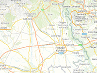

Example of how to make the inertia, when you move the map.
Usage instructions:
Add this script to map GameObject.
Add this script to map GameObject.
InertiaExample.cs
/* INFINITY CODE 2013-2016 */
/* http://www.infinity-code.com */
using System.Collections.Generic;
using System.Linq;
using UnityEngine;
namespace InfinityCode.OnlineMapsExamples
{
[AddComponentMenu("Infinity Code/Online Maps/Examples (API Usage)/InertiaExample")]
public class InertiaExample : MonoBehaviour
{
/// <summary>
/// Deceleration rate (0 - 1).
/// </summary>
public float friction = 0.9f;
private bool isInteract;
private List<double> speedX;
private List<double> speedY;
private double rsX;
private double rsY;
private double lng;
private double lat;
private const int maxSamples = 5;
private void FixedUpdate()
{
if (isInteract)
{
double nlng, nlat;
OnlineMaps.instance.GetPosition(out nlng, out nlat);
double cSpeedX = (nlng - lng);
double cSpeedY = (nlat - lat);
speedX.Add(cSpeedX);
speedY.Add(cSpeedY);
while (speedX.Count > maxSamples) speedX.RemoveAt(0);
while (speedY.Count > maxSamples) speedY.RemoveAt(0);
lng = nlng;
lat = nlat;
}
else
{
double clng, clat;
OnlineMaps.instance.GetPosition(out clng, out clat);
clng += rsX;
clat += rsY;
OnlineMaps.instance.SetPosition(clng, clat);
rsX *= friction;
rsY *= friction;
}
}
private void OnMapPress()
{
OnlineMaps.instance.GetPosition(out lng, out lat);
isInteract = true;
}
private void OnMapRelease()
{
isInteract = false;
if (speedX.Count > 0) rsX = speedX.Average();
else rsX = 0;
if (speedY.Count > 0) rsY = speedY.Average();
else rsY = 0;
speedX.Clear();
speedY.Clear();
}
private void Start()
{
OnlineMapsControlBase.instance.OnMapPress += OnMapPress;
OnlineMapsControlBase.instance.OnMapRelease += OnMapRelease;
speedX = new List<double>();
speedY = new List<double>();
}
}
}